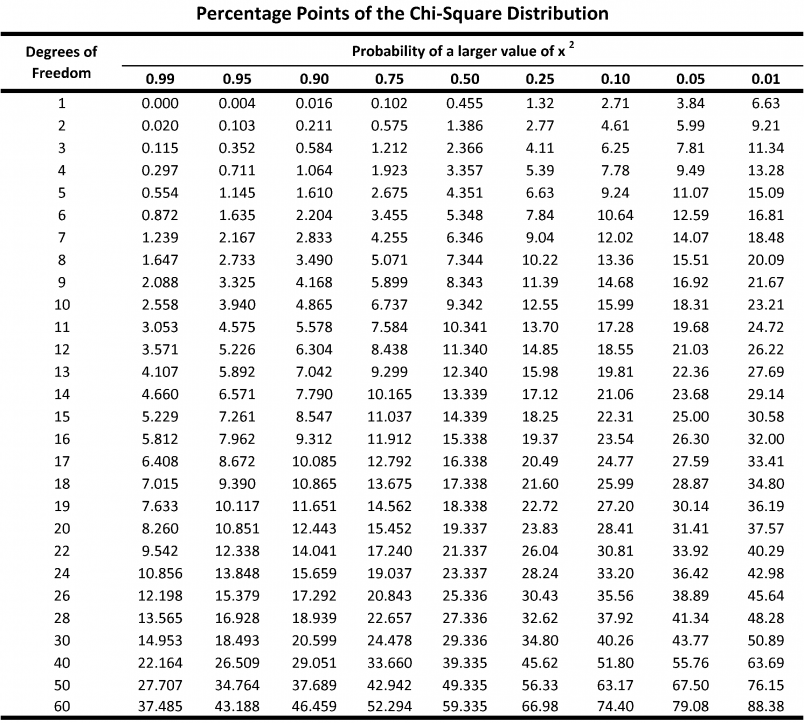
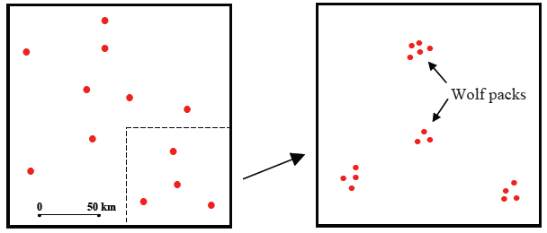

Point Pattern Analysis
Jose Parreno Garcia
14 September 2017
I follow the same structure and pretty much all the examples that Tony E. Smith uses the material for lectures. The intention is not produce a scientific document, but a place to have as a reference to understand spatial point pattern analysis easily with some support R code (i.e. do not expect derivation of formulas, or complex writing.)
# ----------------------------------------------------------------------
# Loading libraries
# ----------------------------------------------------------------------
# Dataset libraries
library(boot)
# Plotting libraries
library(ggplot2)
library(plotly)
library(gridExtra)
library(grid)
library(png)
# Spatial libraries
library(sp)
library(spatstat)
library(spatial)
library(splancs)
# Statistics library
library(stats)
# Other
library(knitr)1 Setting the problem
1.1 Examples of point patterns
Let’s look at 2 differentiated types of point patterns.
# Redwood window
redwood_rr = ppp(redwood$x, redwood$y, window = ripras(redwood))
# Cells window
cells_rr = ppp(cells$x, cells$y, window = ripras(cells))
# Subplots
par(mfrow=c(1,2))
plot(redwood_rr, cols='brown', main='Redwood Seedling') # pch is symbol code, cex is plot shrinkage
plot(cells_rr, cols='green', main='Cells') # pch is symbol code, cex is plot shrinkage factorxlabs = list(title = "", linecolor = toRGB("lightgrey"), zerolinecolor = toRGB("white"))
ylabs = list(title = "", linecolor = toRGB("lightgrey"), zerolinecolor = toRGB("white"))
# ---------------------------------------------------------------------------------------------------------
# Redwood seedlings dataset
# ---------------------------------------------------------------------------------------------------------
redwood_df = data.frame(matrix(vector(), redwood$n, 2
, dimnames = list(c(), c("x","y"))), stringsAsFactors = F)
redwood_df$x = redwood$x
redwood_df$y = redwood$y
a1 = list(text = "Fig 1.1. Redwood seedlings", showarrow = FALSE, xref = "paper", yref = "paper", yanchor = "bottom",
xanchor = "center", align = "center", x = 0.5, y = 1)
p1 = plot_ly(redwood_df, x = ~x, y = ~y) %>% layout(annotations = a1, xaxis = xlabs, yaxis = ylabs)
# Number points
n = redwood$n
# Redwood window
redwood_rr = ppp(redwood$x, redwood$y, window = ripras(redwood))
# ---------------------------------------------------------------------------------------------------------
# Biological cell dataset
# ---------------------------------------------------------------------------------------------------------
cells_df = data.frame(matrix(vector(), cells$n, 2
, dimnames = list(c(), c("x","y"))), stringsAsFactors = F)
cells_df$x = cells$x
cells_df$y = cells$y
a2 = list(text = "Fig 1.2. Cells", showarrow = FALSE, xref = "paper", yref = "paper", yanchor = "bottom",
xanchor = "center", align = "center", x = 0.5, y = 1)
p2 = plot_ly(cells_df, x = ~x, y = ~y) %>% layout(annotations = a2, xaxis = xlabs, yaxis = ylabs)
p = subplot(p1,p2,titleX = TRUE, titleY = TRUE) %>% layout(showlegend = FALSE)
pConsider the 2 datasets above. The one on the left represents the locations of redwood seedlings in a section of a forest. Intuitively, we would say this dataset is clustered. On the other hand, the right graph shows the locations of the centres of 42 biological cells observed under optical microscopy. In this case, we would be more inclined to say that these cells are dispersed. Now, these assumptions of datasets being clustered or dispersed come with the interpretation of each one of us as humans, so a very logical question would be: are there any methods that can help us distinguish between clustered and dispersed datasets in a statistical and scientific way?
The answer is YES. The basis of all methods that we are going to present is the comparison of, a certain distribution/probability against a theoretical random distribution of points. The theoretical distribution will act as the benchmark against which we can compare via functions/p-values/etc… our empirical calculations.
2 Models of Spatial Randomness
As with most statistical analyses, cluster analysis of point patterns begins by asking: What would point patterns look like if points were randomly distributed? This requires a statistical model of randomly located points.
2.1 Spatial Laplace Principle
Spatial Laplace Principle is very easy to understand. It basically says that, if there is not available information that indicates if certain events that we are studying are more likely than others, then we should basically treat all events the same and therefore say that they have the same probability of occuring. Translating this into a graphical explanation, if we have an area divided in equal areas, there is no reason to believe that this point is more likely to appear in either left half or the (identical) right half. If we look at the image below, for the first case, any given point should have the same probability (1/2) of appearing in either half of the area. If we divide the areas again by half, then points should have the same probability (1/4) of appearing in any of the 4 squares. Etc, etc, etc…
include_graphics(paste0(source_path,"/images/1_Spatial_Laplace_Principle.PNG"))To put this into mathematical terms, the probability that a random point in \(S\) lies in any cell \(C \subset S\) is proportional to the area of \(C\).
\[ Pr(C|S) = \frac{a(C)}{a(S)} \]
2.2 Complete Spatial Randomness (CSR)
Having understood that the first assumption of spatial randomness is that, without any given information on the likehood of events occuring being different across the dataset, the probability is should be the same for all events; then we move to the second key assumption. This second assumption considers that that the locations of these points have no influence on one another. For example, animal packs location tend not to be randomnly spaced because each pack has it’s own hunting areas, and hence animal packs location will have influence against other packs (breaking the second key assumption).
This together with the Spatial Laplace Principle above defines the fundamental hypothesis of complete spatial randomness (CSR), which we shall usually refer to as the CSR Hypothesis.
2.2.1 For small regions
To put this in mathematical terms for small regions, we consider the total number of points appearing in \(C\):
\[ N(C) = \sum_{i=1}^n X_i(C), \quad\quad with\:X_i=1\:for\:points\:inside\:C,\:0\:otherwise \] After this, if we would like to compare any dataset to this CSR hypothesis, we would need to compare it against “something”. Remember that this something for the Spatial Laplace Principle was a simple as comparing the proportion of points per area against the theoretical \(1/n\). For CSR, we compare against a distribution.
We can use Bernouilli indepedent variables and build a Binomial random variable distribution:
\[PR[N(C) = k|n,R] = \frac{n!}{k!(n-k)!}\bigg(\frac{a(C)}{a(R)}\bigg)^k\bigg(1-\frac{a(C)}{a(R)}\bigg)^{n-k}, k = 0,1,...,n\]
Messy formula eh! Anyway, this is not the distribution we will normally use, so don’t worry too much about it. But if we would, we could just use a statisticall package in R and calculate the theoretical Binomial distribution for number of points we have in our spatial dataset.
2.2.2 For large regions
If the reference region \(R\) is large, then the exact specification of the area and number of points in contains is not of that much interest and we can remove these conditioning effects by studying the Poission approximation instead of the Binomial distribution. YOu might ask, well, why is the area of study important in using other distributions? Imagine yourself in Tiananmen square and it starts to rain. You have a magical machine that counts the number of drops that are falling where you are standing. Would that count change if the size of the square was bigger or smaller? No. Would that count depend on the total number of drops hitting the whole square? No. Hence the specification of the area itself (shape of the square) and total number of points in the area is not that interesting.
What would be very interesting for us is to know the intensity of the rainfall! In the square, we should expect suddenly having in a single square tile an intensity of 1000 drops per tile and just right next to it only 1 drop per tile. Intensity might vary throughtout the whole square, but it shouldnt vary that much, and if it does, it should be smooth variations. Therefore, we want to introduce the concept of intensity to our CSR hypothesis.
Therefore we define the expected density in such a way that we allow the area and the number of points to vary but keeping the intensity the same:
\[ \lambda(n,R) = \frac{n}{a(R)}\]
Using this we can define the expected number of points in any given cell:
\[ E[N(C)] = \lambda a(C)\]
Under the above conditions, the Binomial probabilities used in small areas, converge to simple Poisson probabilities:
\[ PR[N(C) = k|n,R] = \frac{[\lambda a(C)]}{k!}^k e^{-\lambda a(C)} \]
3 Testing CSR - Basics
I know that the previous sectin was a bit tedious with formulas and mathematical terms. But it was necessary to understand the basis of everything that we are going to test. We can summarise it by saying that, we want to test certian spatial dataset against a theoretical distribution or theoretical pattern, which can be given by the simplest Spatial Laplace Principle to a bit more elaborated Poisson distribution.
In this section we are going to discuss 3 different methods that build one after the other using the above concepts. These 3 approaches to test the CSR hypothesis are: * Quadrat Method * Nearest Neighbour Method * Method of K-functions
You will how we introduce these methods bit by bit with examples and normally conclude with disadvantages or problems we might find whilst using them, which leads to the following testing methodology. Let’s start!
3.1 Quadrat method
This simple method is essentially a direct test of the CSR Hypothesis as stated in the Spatial Laplace Principle, where given a point pattern in a rectangular region \(R\), one begins by partitioning \(R\) it into rectangular subcells of equal area, and the CSR hypothesis says that the cell-count distribution for each subcell must be the same. In other words, the distribution or count of subcells which 0 points, or 1 point, or 2 points, etc, should be the same across the study area. If we assume the area \(R\) is large enough, then we can use the Poisson approximation and the point density as defined above.
I hope you remember your statistics a little bit… Basically, having the above, the easiest way to test the CSR hypothesis is to use the Pearson \(\chi^{2}\) goodness-of-fit test. How does the Pearson \(\chi^{2}\) goodness-of-fit test work? I will explain the steps, then implement a very easy to follow R code to show roughly how it works, and then use a proper R library (obviously using various examples).
3.1.1 The Pearson \(\chi^{2}\) goodness-of-fit test:
- Having our spatial dataset, divide the whole area into smaller equal rectangular subcells
- Count the number of points in each subcell and record all the counted combinations. For example, if we have that 10 subcells have no points, 3 subcells have 1 point and 2 subcells have 2 points, we know that our possible outcomes are subcells with 0, 1, 2 points in them.
- Used the counts to record the total number of cells with these possible outcomes (ie the same as above, 10 with no point, 3 with 1 point, 2 with 2 points).
- Use the Poisson approximation with the mean expected number of points to calculate the theoretical outcomes that we would have. For example, (and I am making this up), theoretically under CSR, we should have 5 subcells with 0 points, 3 subcells with 1 point, 3 subcells with 2 points and 1 subcell with 3 points.
\[ E(N|\lambda) = a \cdot \lambda = a \cdot \frac{n}{a(R)} \]
- Calculate the differences between the observed and the theoretical possible outcomes.
- Calculate the individual \(\chi^{2}\) statistic by dividing the difference by the expected Poisson outcome
- Sum all of the individual \(\chi^{2}\) statistics to get the global one
- Finally, check the theoretical \(\chi^{2}\) value found in tables with \(b-1\) degrees of freedom, being \(b\) the total number of different bins.
\[ \chi^{2} = \sum_{i=1}^n \frac{n_i-n/m}{n/m}^2 \]
- Our statistical test will be:
- NULL HYPOTHESIS. We assume that there is no significant difference between the observed and the expected value. In other words, if the expected \(\chi^2\) (given a certain probability threshold) is bigger than the observed \(\chi^2\), the p-value would be bigger than that probability threshold. Hence we retain \(H_0\) and conclude that there is insufficient evidence to suggest that the spatial distribution does not follow a Poisson distribution and therefore, is not random.
- ALTERNATIVE HYPOTHESIS. Obviously, this will test the opposite, that there is a significant difference (i.e. the expected \(\chi^2\) (given a certain probability threshold) is smaller than the observed \(\chi^2\)). If there is a significant we would be rejecting the null hypothesis and would say that the observed distribution does not follow a random spatial distribution (it can be regular or aggregated).
- To check this hypothesis we need to calculate the actual \(\chi^2\) value of the whole distribution and compare it against a theoretical \(\chi^2\) value. This theoretical value can be calculated using \(\chi^2\) tables.
3.1.2 Creating Pearson \(\chi^{2}\) goodness-of-fit test function
# --------------------------------------------------------------------------------------------------------
# Function to perform the count of points per quadrat and produce a scatter plot and a histogram
# --------------------------------------------------------------------------------------------------------
scatter_hist_pointdf = function(x,y,squares_grid){
# Create a datafarme with the coordinates of the points we are going to plot
df = data.frame(x = x, y = y)
# We use squares_grid to define how many subcells we want to divide our axis in. If we want 4 squares across the x and y axis, then squares_grid = 4, which will divide our whole area in 16 squares.
# We use this to create a numeric sequence that will be used to placed our break points (subcells) in our graph
nsquares = squares_grid
if(round(max(x))/nsquares>0){breaks_x = seq(round(min(x)),round(max(x)),abs(round(max(x))/nsquares))}
if(round(max(x))/nsquares<0){breaks_x = seq(round(min(x)),round(max(x)),abs(round(min(x))/nsquares))}
if(round(max(x))/nsquares==0){breaks_x = seq(round(min(x))-1,round(max(x)),0.1)}
if(round(max(y))/nsquares>0){breaks_y = seq(round(min(y)),round(max(y)),abs(round(max(y))/nsquares))}
if(round(max(y))/nsquares<0){breaks_y = seq(round(min(y)),round(max(y)),abs(round(min(y))/nsquares))}
if(round(max(y))/nsquares==0){breaks_y = seq(round(min(y)),round(max(y)),0.1)}
print(breaks_x)
print(breaks_y)
# This piece of code will just plot the points with the x, y coordinates and divide the area using the break points defined above
p1 = ggplot(df, aes(x = df$x, y = df$y)) + geom_point(col = "green")
p1 = p1 + labs(x = "", y = "")
p1 = p1 + theme_minimal()
p1 = p1 + theme(panel.grid.major.y = element_line(colour = "grey", size = 0.5)
, panel.grid.minor.y = element_line(colour = "grey", size = 0.5)
, panel.grid.major.x = element_line(colour = "grey", size = 0.5)
, panel.grid.minor.x = element_line(colour = "grey", size = 0.5))
p1 = p1 + scale_x_continuous(breaks = breaks_x) + scale_y_continuous(breaks = breaks_y)
p1 = ggplotly(p1)
# Count the number of points per grid
# ------------------------------------
# - The trick is to use the function cut(). The documentation about cut() says that it divides the range of x into intervals and codes the values in x according to which interval they fall. The leftmost interval corresponds to level one, the next leftmost to level two and so on.
# - Basically, it is converting the x and y coordinates into bin numbers. In other words, we will cut the xaxis at break points = xmax/nsquares (if we had created a grid with 10 squares in an axis in a range of 0 to 5, then this would equal to 0.5), then, we will create bins of length xmax/nsquares (i.e. (0,0.5],(0.5,1],etc))).
xcut = cut(x, breaks_x)
ycut = cut(y, breaks_y)
# Once we have created our bins, we count the points that fall within them.
count_matrix = table(ycut,xcut)
points_in = as.vector(count_matrix)
#print(count_matrix)
#print(points_in)
# Finally, we count the number of times each frequency appears.
freq_count = as.data.frame(table(points_in))
#print(freq_count)
freq_count$points_in = as.factor(freq_count$points_in)
# We create a plot of the bar graph/histogram of bins and frequency of subcells that contain that number of points.
p2 = plot_ly(x = freq_count$points_in
, y = freq_count$Freq
, type = "bar")
p = subplot(p1,p2,margin = 0.05)
# Return the frequency count and the plot object for later use.
return(list(freq_count,p))
}
# --------------------------------------------------------------------------------------------------------
# Function to perform the poisson and chi-squared calculations
# --------------------------------------------------------------------------------------------------------
poisson_chi_calc = function(N,freq_count){
# Build all possible bins from 0 to the maximum number of points in a subcell
bins_complete = seq(0
, max(as.numeric(as.character(freq_count$points_in)))
, 1)
# Ensure the point_in parameter is in a numeric class
freq_count$points_in = as.numeric(as.character(freq_count$points_in))
# Start building the final table. We start by adding all possible bins, and the joining the corresponding observed count frequencies to the corresponding bins. Remember that in the observed pattern we might have 1000 subcells with 0 points and 10 subcells with 10 points, with no intermediate bins in between. However, the theoretical distribution might have all bins going from 0 to 10 points.
bins_final = data.frame(bins_complete = bins_complete)
bins_final = merge(x = bins_final, y = freq_count
, by.x = "bins_complete", by.y = "points_in", all.x = TRUE)
bins_final$Freq = ifelse(is.na(bins_final$Freq),0,bins_final$Freq)
# Calculating the expected poisson distribution values -> we use the dpois function from the stat package
# -----------------------------------------------------------------------------------------------
# We calculate average intensity across the whole spatial dataset (total number of points by total number of subcells (nsquares^2 because nsquares represents only the number of subcells in a single axis))
N = N
mean = N/nsquares^2
print(paste("Mean of number points per square: ",mean))
# Dpois function to calculate expected number of points
expected_Poisson = 100*dpois(bins_final$bins_complete, lambda = mean, log = FALSE)
# Setting table to easily visualise calculations
chi_table = data.frame(bins = bins_final$bins_complete
, observed = bins_final$Freq
, expected = expected_Poisson)
# Difference between the observed and the expeceted distributions
chi_table$diff_obs_exp = abs(chi_table$observed - chi_table$expected)
# Individual chi squares
chi_table$indv_chi_squared = (chi_table$diff_obs_exp^2)/(chi_table$expected)
# Adding the last row, which represent the final chi-square statistic as the sum of all the individual chi-square values.
rbind(chi_table,c("Sum",sum(chi_table$observed),sum(chi_table$expected),sum(chi_table$diff_obs_exp),sum(chi_table$indv_chi_squared)))
}nsquares = 10
N = redwood$n
# Counting points per bins
result = scatter_hist_pointdf(x = redwood_df$x, y = redwood_df$y, nsquares)## [1] 0.0 0.1 0.2 0.3 0.4 0.5 0.6 0.7 0.8 0.9 1.0
## [1] -1.0 -0.9 -0.8 -0.7 -0.6 -0.5 -0.4 -0.3 -0.2 -0.1 0.0# freq_points
freq_points = result[[1]]
# Plot
result[[2]]# Chi-square test
poisson_chi_calc(N, freq_points)## [1] "Mean of number points per square: 0.62"## bins observed expected diff_obs_exp indv_chi_squared
## 1 0 69 53.7944437594674 15.2055562405326 4.29800783177179
## 2 1 13 33.3525551308698 20.3525551308698 12.4196331804187
## 3 2 9 10.3392920905696 1.33929209056964 0.173484150379929
## 4 3 7 2.13678703205106 4.86321296794894 11.0684125356773
## 5 4 1 0.331201989967914 0.668798010032086 1.35050752039929
## 6 5 0 0.0410690467560214 0.0410690467560214 0.0410690467560214
## 7 6 1 0.00424380149812221 0.995756198501878 233.642032336725
## 8 Sum 100 99.99959285118 43.4662396852109 262.993146602128Interpretation of results
Before looking up the tabular value for \(\chi^2\) statistic, we could get a sense of what the result is going to be by looking at the differences between expected and observed. The total difference is ~49 which, compared to the total number of squares (100), is nearly 50%. Anyway, that is not really relevant. Let’s look at the final \(\chi^2\) statistic:
- Our method has calculated a \(\chi^2\) statistic of ~268.
- In tabular form (look below - although it doesn’t cover up to 99 df), for a probability of 0.05 and degrees of freedom of 99 (100 squares - 1 (-1 because we can determine the number of points that will land on the last subcell by knowing the rest)), then we have 123.2252.
- As 268 >> 123.2252, in other words, the observed is much bigger than the expected, we would be rejecting the null hypothesis and would say that the observed distribution does not follow a random spatial distribution (it can be regular or aggregated).
- This makes sense because just looking at the spatial distribution of the redwood seedlings it does seem that clustering is happening.
# Calculating chi-square statistic with 0.05 conf interval
qchisq(.95, df=99)## [1] 123.2252include_graphics(paste0(source_path,"/images/2_chi-square_table.PNG"))
3.1.3 Testing with R functions
Let’s repeat the same as above, but with in-built R functions.
plot(x = redwood$x, y = redwood$y, pch=16,cex=0.5, col = "red"
, ylim = c(min(redwood$y)-0.1,max(redwood$y)+0.1)
, xlim = c(min(redwood$x)-0.1,max(redwood$x)+0.1))
par(new=TRUE)
plot(quadratcount(redwood,nx = nsquares, ny = nsquares),add=T)quadrat.test(quadratcount(redwood,nx = nsquares, ny = nsquares))##
## Chi-squared test of CSR using quadrat counts
## Pearson X2 statistic
##
## data:
## X2 = 202.52, df = 99, p-value = 8.448e-09
## alternative hypothesis: two.sided
##
## Quadrats: 10 by 10 grid of tilesUsing in-built R function yields the same conclusion (although with some minor discrepancies in the \(\chi^2\) statistic. To be fair that will probably be my fault when implement my own code. I think it has to do in the way we calculate the number of points that appear in each cell. With this I mean that, for example, the lower bounds of the x axis is open which means that if a point lands on that bound, it will not be counted or counted in the right square… Anyway, it doesn’t matter because that was just to show you some more visual graphs).
This quadrat.test function shows that, for a 10x10 grid, with the redwood dataset, we have a \(\chi^2\) statistic of 202.52 which gives us a p-value <<< 0.05 .Since we get a p-Value less than the significance level of 0.05, we reject the null hypothesis, (remember, that the data pattern is a realisation of CSR) and therefore, we conclude that the dataset isn’t randomnly spaced and is either clustered or dispersed.
3.1.4 Problems with quadrat methods.
There is a massive big problem with quadrat methods. As we have seen, the process of using a quadrat method involves dividing our space in different equal area regions. This exact process of partitioning the space in different plays a very significant role in the final result, as we can decide to divide the space in only 4 parts or in a 1,000,000 parts…
3.1.4.1 Choosing to divide the region in big subspaces.
nsquares = 2
plot(x = redwood$x, y = redwood$y, pch=16,cex=0.5, col = "red"
, ylim = c(min(redwood$y)-0.1,max(redwood$y)+0.1)
, xlim = c(min(redwood$x)-0.1,max(redwood$x)+0.1))
par(new=TRUE)
plot(quadratcount(redwood,nx = nsquares, ny = nsquares),add=T)quadrat.test(quadratcount(redwood,nx = nsquares, ny = nsquares))##
## Chi-squared test of CSR using quadrat counts
## Pearson X2 statistic
##
## data:
## X2 = 6.5161, df = 3, p-value = 0.1781
## alternative hypothesis: two.sided
##
## Quadrats: 2 by 2 grid of tiles- \(\chi^2\) > 0.05 -> in this case we CAN’T reject the NULL hypothesis and we conclude the data is a realisation of CSR!!!
- So, we have gone from saying that the Redwood seedlings dataset was not completely spatially randomn by using a grid of 10x10, to saying it is by using a grid of 2x2!
- This is not a very robust methodology as we depend on selecting an appropiate subcell size!
3.2 Nearest Neighbour Method
In view of these shortcomings, the quadrat method above has for the most part been replaced by other methods. The simplest of these is based on the observation that if one simply looks at distances between points and their nearest neighbors in \(R\) , then this provides a natural test statistic that requires no artificial partitioning scheme.
First point to raise is how do we calculate distances between points. There are multiple methods but we will be using the Eucliden distance:
\[ d(x,y) = \sqrt[]{(x_1 - y_1)^2 + (x_2 - y_2)^2} \]
As the name indicates, the nearest neighbour indicates the point which is closest out of all the points in the dataset. You can imagine that, if the dataset has it’s points very far away from each other, the average nearest distance will be quite big compared to a dataset with it’s points close to each other. Again, we need an objective measure to understand the nearest neighbour method under CSR.
include_graphics(paste0(source_path,"/images/3_nn_diagram.PNG"))3.2.1 NN-method under CSR
To make these ideas precise, we must determine the probability distribution of nn-distance under CSR, and compare the observed nn-distance with this distribution. There are an array of possible tests that can be carried out to calculate CSR for nn-method. The most common one is the Clark-Evans test
The Clark-Evans test involves a normal approximation of the mean of the nn distance (\(D\)). When we construct this normal approximation, we get the mean and variance of the distribution.
- Mean: \(E(D) = 1/(2\sqrt[]{\lambda})\)
- Variance: \(var(D) = (4-\pi)/(4\lambda\pi)\)
By quickly looking at both, we see that they depend on the point density \(\lambda\), which make total sense. For example, if we have a very dense point dataset, then the expected value and the variance of nn-distances decrease, in other words, the expected nn-distance is going to be smaller, and the variance of nn-distances across the dataset should be less.
By considering the Central Limit Theorem and other assumptions, we can say that the mean nn-distance for a studied sample must be approximately normally distributed under the CSR Hypothesis with mean and variance. This distribution provides a new test of the CSR Hypothesis, known as the Clark-Evans Test. All of this sounds a bit too technical to be fair, so build this test in a very simple way.
- First of all, we can construct a sample mean value for nn-distances \[ d_m = \frac{1}{m} * \sum_{i=1}^m d_i \]
- Using this, or the mean and variance from above, we can convert this into a \(Z\) value
\[ z_m = \frac{d_m- \mu}{\sigma}\]
- This \(Z\) value is now ready to compare against a 2 tail or 1 tail test!
3.2.1.1 Two tail tests
The standard test of CSR in most software is a two-tailed test in which both the possibility of “significantly small” values of \(d_m\) (clustering) and “significantly large” values of \(d_m\) (dispersion) are considered. If you do not remember very well what you learnt in your university statistics modules, let me give you a small summary.
A two-tailed test is a statistical test in which the critical area of a distribution is two-sided and tests whether a sample is greater than or less than a certain range of values. If you are using a significance level of 0.05, a two-tailed test allots half of your alpha to testing the statistical significance in one direction and half of your alpha to testing statistical significance in the other direction. This means that .025 is in each tail of the distribution of your test statistic.
We can use this test to decide if our dataset is spatially random (CSR) or not:
- Do not reject the CSR Hypothesis if \(|z_m| <= z_{\alpha / 2}\)
- Reject the CSR Hypothesis if \(|z_m| > z_{\alpha / 2}\). Basically, we can say that the dataset is not randomnly space, but, we cannot determine with this test if it is clustered or dispersed.
include_graphics(paste0(source_path,"/images/5_two_tail_test.PNG"))include_graphics(paste0(source_path,"/images/5_1_one_tail_clustering.PNG"))3.2.1.2 One tail test
In many cases, knowing if the dataset is clustered or dispersed is more relevant than simply knowing it is not randomnly spaced. This is when we use a 1 tail test.
- Clustering versus CSR Test: Significant if \(|z_m| < -z_{\alpha}\)
- Dispersion versus CSR Test: Significant if \(|z_m| > z_{\alpha}\)

3.2.2 Example
Let’s plot again the Redwood seedling example. Before starting any testing using the nn-method, remember that the quadrat method changed the result depending on the area of the subcells we divided our window into, and that was the reason we wanted to investigate new techniques.
xlabs = list(title = "", linecolor = toRGB("lightgrey"), zerolinecolor = toRGB("white"))
ylabs = list(title = "", linecolor = toRGB("lightgrey"), zerolinecolor = toRGB("white"))
# ---------------------------------------------------------------------------------------------------------
# Redwood seedlings dataset
# ---------------------------------------------------------------------------------------------------------
redwood_df = data.frame(matrix(vector(), redwood$n, 2
, dimnames = list(c(), c("x","y"))), stringsAsFactors = F)
redwood_df$x = redwood$x
redwood_df$y = redwood$y
a1 = list(text = "Fig 1.1. Redwood seedlings", showarrow = FALSE, xref = "paper", yref = "paper", yanchor = "bottom",
xanchor = "center", align = "center", x = 0.5, y = 1)
p1 = plot_ly(redwood_df, x = ~x, y = ~y) %>% layout(annotations = a1, xaxis = xlabs, yaxis = ylabs)
p1# Number of points
print(paste('Number of points: ', redwood$n))## [1] "Number of points: 62"Let’s now calculate the standard \(Z\) values and the correspoding \(p-values\) associated with them:
- Point density: $ = n/a(R) = 62/44108 = 0.00141$
- CSR Mean nn-distance: $ = 1/2 = 1/2 = 13.336 $
- Sample Mean nn-distance: $ d_m = 9.037 $
- CSR Standard dev of nn-distance: $ = = = 0.8853$
At this point, we already notice that the redwood seedling dataset has an average nn-distance smaller than the one for a CSR dataset under a certain point density (9.037 < 13.336). This already suggests that the redwood seedling dataset has individual trees that are much closer to their nearest individual nn-tree than if the spacing was random. Let’s check this statistically.
- \(Z\) value: \(z_m = (d_m - \mu)/(sigma) = (9.037 - 13.336)/(0.8853) = -4.855\)
Comparing with the table above for a 1 tail test \(Z_sample = -4.855 < -2.33 = -z_{\alpha=0.01}\), which means that there is significant clustering.
\(P-value\): \(P(Z\leq z_m) = \Phi (z_m) = \Phi (-4.855) = 0.0000006\). This is telling us that, the chance of obtaining a mean nn-distance as low as 13.336 is less than one in a million, which is very strong evidence in favor of clustering versus CSR.
3.2.2.1 Plots for NN-methods - G function
We can find and plot nearest neighbour distances, finding them with nndist - plotting the empirical cumulative distribution function (ECDF) of the nearest neighbour distances is interesting.
At the same time we can compare this to the \(G\) measure, which turns out to be just the ECDF of the nearest neighbour distances, plotted by default with the expected CSR line. In other words, it measures the distribution of the distances from an arbitrary event to its nearest event. Under CSR, the value of the G function is:
\[ G(d) = 1 - exp(-\lambda \pi d^2)\]
Instead of calculating the \(G\) function for only a given distance, we can apply Monte-Carlo methods (putting it simple, calculating the G function multiple times for different random samples) which will provide the upper and lower envelopes (upper and lower accepted boundaries.):
- If the empirical \(G\) function is within the boundaries, then it can be accepted that it complies with the \(G\) function under CSR
- If it is above the maximum boundary, this suggests a clustered pattern.
- If it is below the minimum boundary, this suggests a regular pattern.
set.seed(123)
# Number points
n = redwood$n
# Redwood window
redwood_rr = ppp(redwood$x, redwood$y, window = ripras(redwood))
# Creating multiple random point patterns with n points and within the redwood seedling window
ex = expression(runifpoint(n, win = ripras(redwood)))
# Calculate the upper and lower boundaries
res = envelope(redwood_rr, Gest, nsim = 99, simulate = ex, verbose = FALSE, saveall = TRUE)
plot(res, xlim = c(0, 0.2))When reading the graph, values \(G_{obs}(r) > G(r)\) suggest that nearest neighbour distances in the point pattern are shorter than for a Poisson process, suggesting a clustered pattern.
3.2.3 Problems with NN-methods
One major difficulty with using only the \(Z\) values, compared to the \(G\) function, is that we have used the entire point pattern, and have thus ignored the obviously dependencies between nn-distances. This procedure tends to overestimate the significance of clustering (or dispersion). Let’s use another dataset to understand the problems that nn-methods might have.
3.2.3.1 Bodmin Tors example
The Redwood Seedling example above is something of a “straw man” in that statistical analysis is hardly required to demonstrate the presence of such obvious clustering. Our second example provides a good case in point. It also serves to illustrate some additional limitations of the above analysis.
Here the point pattern consists of granite outcroppings (tors) in the Bodmin Moor, located at the very southern tip of England in Cornwall county. It seems to appear that there is some clustering of tors, but certainly not as strong as the redwood seedling example above.
data(bodmin)
bodmin1 = bodmin
# A splancs point to spatstat ppp class conversion function
spl2ppp <- function(splancs.obj) {
p1 <- splancs.obj$poly
end <- length(p1[,1])
# The following loop removes any duplicated top and bottom vertices
while (sum(p1[end,] == p1[1,]) == 2) {
p1 <- p1[-1,]
end <- length(p1[,1])
}
# The following loop removes any duplicated adjacent vertices
end <- length(p1[,1])
dupeVec <- vector()
for(i in 1:(end-1)) {
if(sum(p1[i,] == p1[i+1,]) == 2) {
dupeVec <- c(dupeVec, i)
}
}
p1 <- p1[-dupeVec,]
p2 <- list(x=p1[,1], y=p1[,2]) # change to class list
p3 <- owin(poly=p2)
pp1 <- cbind(splancs.obj$x,splancs.obj$y)
ppp.obj <- as.ppp(pp1, W=p3)
return(ppp.obj)
}
bod1 = spl2ppp(bodmin1)
bod = spl2ppp(bodmin)
plot(bod1, cols='brown', main='Bodmin Tors') # Number of point
print(paste('Number of points: ', bod$n))## [1] "Number of points: 35"# Area of shape
print(paste('Area: ', area(bod)))## [1] "Area: 206.62"# Mean nn-distance
nns = nndist(bod)
nn_calculations = function(n, area, mean_sample_nn_dist){
lambda = n/area
mean_nn_dist = 1/(2*sqrt(lambda))
sigma = sqrt(4-3.1415)/(sqrt(4*n*3.1415*lambda))
z_value = (mean_sample_nn_dist - mean_nn_dist)/(sigma)
print(paste("Point density = ", round(lambda,3)))
print(paste("CSR Mean nn-distance = ", round(mean_nn_dist,3)))
print(paste("CSR Std dev of nn-distance = ", round(sigma,3)))
print(paste("Z value = ", round(z_value,3)))
}
nn_calculations(bod$n, area(bod), mean(nns))## [1] "Point density = 0.169"
## [1] "CSR Mean nn-distance = 1.215"
## [1] "CSR Std dev of nn-distance = 0.107"
## [1] "Z value = -1.033"** CALCULATION WITH FULL SAMPLE **
- Point density: $ = n/a(R) = 35/206.62 = 0.169 $
- CSR Mean nn-distance: $ = 1/2 = 1/2 = 1.216 $
- Sample Mean nn-distance: $ d_m = 1.1039 $
- CSR Standard dev of nn-distance: $ = = = 0.107$
At this point, we notice that the Bodmin tor dataset has an average nn-distance smaller than the one for a CSR dataset under a certain point density (9.037 < 13.336), BUT, in this case the differences are negligible compared to the differences occured for the Redwood seedling dataset!
- \(Z\) value: \(z_m = (d_m - \mu)/(sigma) = (1.1039 - 1.215)/(0.107) = -1.033\)
- Comparing with the table above for a 1 tail test \(Z_sample = -1.033 > -2.33 = -z_{\alpha=0.01}\), which means that there we cannot reject the hypothesis of CSR. It does shock a little bit, because intuitively there seems to be some clustering of points at the left side of the studied area.
Let’s check what the G-function gives us.
set.seed(123)
# Number points
n = bod$n
# Creating multiple random point patterns with n points and within the bodmin tor window
ex = expression(runifpoint(n, win = ripras(bod)))
# Calculate the upper and lower boundaries
res = envelope(bod, Gest, nsim = 99, simulate = ex, verbose = FALSE, saveall = TRUE)
plot(res, xlim = c(0, 4))By using the \(G\) function, we would also say that the Bodming Tor dataset complies with CSR, but as we said before, we are not really convinced about this result as the plotting of the data suggest some possible clustering. This could be due to 2 key theoretical difficulties here that have yet to be addressed: * The first is that for point pattern samples as small as the Bodmin Tors example, the assumption of asymptotic normality may be questionable. * The second is that nn-distances for points near the boundary of region R are not distributed the same as those away from the boundary.
3.3 K functions
We therefore need to add another tweak to the previous 2 methods. Remember that, due to the problems related with dependancies of the area of subcells in the quadrat methods, we tried to get away from that methodology and work with distances between points.
In the Bodmin Tors example above, notice that the clustering structure is actually quite different from that of the Redwood Seedling example. Rather than small isolated clumps, there appear to be two large groups of points in the northwest and southwest, separated by a large empty region. Moreover, the points within each group are actually quite evenly spaced (locally dispersed). These observations suggest that the pattern of tors exhibits different structures at different scales. Hence the objective of the present section is to introduce a method of point pattern nalysis that takes such scale effects into account, and in fact allows “scale” to become a fundamental variable in the analysis.
To capture a range of scales in a more systematic way, we now consider what amounts to an extension of the quadrat (or cell-count) method. If in quadrat methods, dependencies on scale of individual cells was a weakness, in K functions we are going to turn this dependency into a virtue. To do this, rather than fixing the location and the scale of the subcells (quadrat method), we are going to allow cells to vary in size and at the same time, consider randomnly sampled cells. Remember that, in the first method (fixing location and scale of subcells), we could very easily calculate the expected number of events at any given location as they followed a theoretical point density of \(number points total/area\). In K functions, we need to consider varying distances from any given point, and this measure doesn’t make sense if we don’t add the point density mentioned. For example, if the point density was very high (very heavy intense rain), then we would expect to find many points within distance \(h\) of the initial point. So, in order to eliminate the effect of point densities, we can simply divide by the point density.
3.3.1 Building the formula
3.3.1.1 Simple K-function
This takes us to introduce the first version (the simplest) of the K-function:
\[ K(h) = \frac{E(number\:of\:additional\:events\:within\:distance\:h\:of\:an\:arbitrary\:event)}{\lambda}\]
As always, we will need to understand what is the measure of \(K(h)\) under a CSR hypothesis. To illustrate why we need this, let’s consider the following 2 images:
include_graphics(paste0(source_path,"/images/8_k_function.PNG"))
The left image shows a distribution of wolf packs. Clearly, this point pattern seems dispersed (as one would expect from wolf packs, as they each have a hunting terriorty). However, within each pack, we have individual wolfs, who are clustered together within each pack. Understanding this, we turn back to our \(K(h)\). If one were to define \(K(h)\) with respect to small distances, \(h\) , around each wolf in the right image, then given the close proximity to other wolves in the same pack, these values would surely be too high to be consistent with CSR for the given density of wolves in this area, which would obvisouly imply clustering. Similarly, if one were to define \(K(h)\) with respect to much larger distances, h , around each wolf in the left figure then given the wide spacing between wolf packs (and the relative uniformity of wolf-pack sizes), these values would surely be too low to be consistent with CSR for the given density of wolves. Hence if one can identify appropriate bench-mark values for \(K(h)\) under CSR, then these K-functions can be used to test for clustering and dispersion at various scales of analysis.
3.3.1.2 Counting number of points within distance h
From the \(K(h)\) above, we can start adding elements to it. For example, we want to to translate the number of events within distance h into a mathematical function. It’s as easy as defining an indicator function:
$$ I_{h}(d_{ij}) = I_{h}[d(s_{i},s_{j})] = { \[\begin{array}{ll} 1 & \mbox{if } d_{ij} \geq h \\ 0 & \mbox{if } d_{ij} < h \end{array}\].
$$
Using the indicator function in the K-function:
\[ K(h) = \frac{E[\sum_{j \neq i} I_h(d_{ij})]}{\lambda} \]
And, instead of applying the K function to all points, if we were to create the sample version of K:
\[ K(h) = \frac{E[\sum_{j \neq i} I_h(d_{ij})]}{\lambda * n} \]
3.3.1.3 Taking into account edge effects
However, the previous formula can never hold exactly in bounded regions R, due to edge effects. Let’s understand the problem of edge effects. In the figure below, we have a point \(s_i\) next to the edge of study region \(R\). If we count the points that are within distance \(h\), we would count only 3 points. However, the theoretical expectectation of points, would try to calculate this using the entire circle. Therefore, if we dont take into account edge effects, the expected value of point counts are reduced.
include_graphics(paste0(source_path,"/images/9_k_function.PNG"))In order to correct the effect, we weight each point, \(s_j\), in the count \(I_h(d_{ij})\) in a manner that inflates counts for points near the boundary. So basically, for points that are not next to the boundary, the weighting will = 1 because we can fill the whole circle. On another hand, if the point is next to the boundary, the circle gets splits by the \(R\) boundary, so the weight is less than one. This will make the weighting for that particular point higher than 1.
\[ K(h) = \frac{E[\sum_{j \neq i} I_h(d_{ij})]}{\lambda * n} * \frac{1}{w_{ij}}\]
3.3.2 K and L function under CSR
To apply K-functions in testing the CSR Hypothesis, it is convenient to begin by ignoring edge effects, and considering the nature of K-functions under this hypothesis for points, that are not influenced by edge effects. It turns out that, for these points, the CSR hypothesis is as simple as:
\[ K(h) = \frac{\lambda \pi h^2}{\lambda} = \pi h^2 \]
So:
- If \(K(h) > \pi h^2\) -> clustering, because the mean point count is higher than CSR
- If \(K(h) < \pi h^2\) -> dispersion, because the mean point count is lower than CSR
If you want to transform this into a starndardised function, its convenient to standardise area values. Therefore:
\[ L(h) = \sqrt{\frac{K(h)}{\pi}} - h = \sqrt{\frac{\pi h^2}{\pi}} - h = h - h = 0\] So:
- If $L(h) > 0 -> clustering.
- If $L(h) < 0 -> dispersion
3.3.3 Testing the Bodmin Tor example
set.seed(123)
bodmin_K = Kest(bod, correction="Ripley")
bodmin_K_envelopes = envelope(bod, Kest)## Generating 99 simulations of CSR ...
## 1, 2, 3, 4, 5, 6, 7, 8, 9, 10, 11, 12, 13, 14, 15, 16, 17, 18, 19, 20, 21, 22, 23, 24, 25, 26, 27, 28, 29, 30, 31, 32, 33, 34, 35, 36, 37, 38, 39, 40, 41, 42, 43, 44, 45, 46, 47, 48, 49, 50, 51, 52, 53, 54, 55, 56, 57, 58, 59, 60, 61, 62, 63, 64, 65, 66, 67, 68, 69, 70, 71, 72, 73, 74, 75,
## 76, 77, 78, 79, 80, 81, 82, 83, 84, 85, 86, 87, 88, 89, 90, 91, 92, 93, 94, 95, 96, 97, 98, 99.
##
## Done.plot(bodmin_K_envelopes, xlim = c(0,4))How to interpret the graphs? * K function graph ** The red line represents the theoretical K function under CSR and the envelopes are represented by the upper and lower borders of the grey area (these are calculated by randomnly creating sample points and calculating R) ** The black line represents the observed K function for the Bodmin Tor dataset. ** We can interpret that, for the Bodmin Tor example, for distances below 1, we more or less follow a CSR pattern. Between 1 and 2, we comply with the expected uncertainty under CSR. But after 2, the pattern shows clustering. ** This conclusion seems quite logical because we did expect at least some clustering due to the distribution of the points. If you look at the following graph, when we add circles of expanding radius, more points appear (radius = 2 starts from red line).
set.seed(123)
plot(bod$x,bod$y)
symbols(x=c(bod$x[20]), y=c(bod$y[20]), circles=rep(0.5), add=T, inches=F)
symbols(x=c(bod$x[20]), y=c(bod$y[20]), circles=rep(1), add=T, inches=F)
symbols(x=c(bod$x[20]), y=c(bod$y[20]), circles=rep(1.5), add=T, inches=F)
symbols(x=c(bod$x[20]), y=c(bod$y[20]), circles=rep(2), add=T, inches=F, fg = "red")
symbols(x=c(bod$x[20]), y=c(bod$y[20]), circles=rep(3), add=T, inches=F, fg = "red")